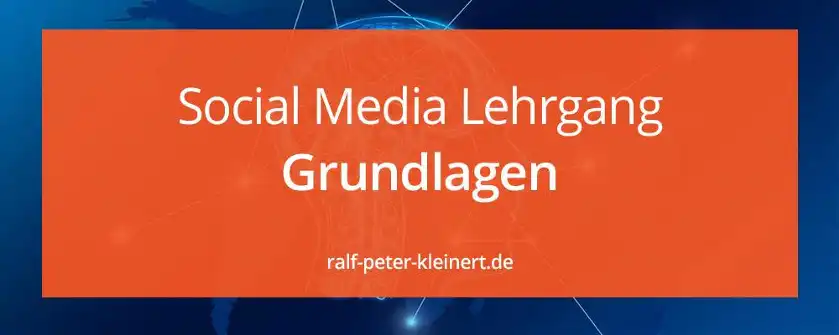

Prinzipien des Web 2.0
Social Media Grundlagen
- Was bedeutet Web 2.0?
- Internet als Plattform
- Nutzung kollektiver Intelligenz
- Daten sind Währung
- Ende der Software-Releases
- Erleichterte Programmierung
- Software ohne Gerätegrenzen
- Erweiterte Internet-Werte
- Zusammenfassung Web 2.0
Weiter im Lehrgang
Übersicht Lehrgang
Was bedeutet Web 2.0?
Als Tim O´Reilly im Jahre 2005 die Entwicklung des Internets beobachtete, nannte er diese Entwicklung "Web 2.0". Diesen Begriff hat er nicht voll ausformuliert und bezeichnete diese Wortschöpfung viel mehr als eine Sammlung von Prinzipien. Diese Prinzipien sollten die Entwicklung des Internets seit Beginn der 2000er darstellen.
Das Internet als Plattform - The Web as Platform
Das Internet, dessen Aufbau und die Struktur bilden die Plattform von unzähligen Diensten.
Ohne die Dienste, Programme und Angebote, die auf dieser Plattform laufen, wäre das Internet nicht werthaltig - O´Reilly 2005
Als es in den ersten Jahren des Internets noch keine Webseiten gab, war es für niemanden von Nutzen. Erst nachdem die ersten Dienste und Angebote des WWW online gingen, begann es zu blühen. Viele der Dienste, die das Internet heute als Plattform nutzen, nutzen es als Basis ihrer Geschäftsmodelle. Als Beispiele sind hier YouTube oder Facebook anzuführen, die sehr erfolgreich auf der Plattform WWW arbeiten.
Nutzbarmachen der kollektiven Intelligenz - Harnessing Collective Intelligence
O´Reilly hat das Web 2.0 beschrieben, dass es arbeitet wie die Synapsen im menschlichen Gehirn. Das menschliche Wissen wird durch viele User in die bestehende Struktur des Internet eingetragen und je öfter Informationen wiederholt oder miteinander verknüpft werden, desto bedeutsamer ist dieses Wissen. Die Häufigkeit von Verbindungen und Verknüpfungen werden u. a. durch Google gesehen und die Information wird als wichtig eingestuft, sollte sie oft vorkommen und verknüpft sein. So kann die Suchmaschine wertvolle Informationen zur Verfügung stellen.
Verknüpfungen die durch die User selbst Entstehen, sind nicht nur Links. Es sind auch Bewertungen, Teilen, Klickraten oder die Zuordnung von Hashtags darunter zu verstehen. Ein sehr bekanntes Beispiel für die Verknüpfung von vorhandenem Wissen durch den User ist zweifelsohne Wikipedia.
Daten sind heute eine teure Währung
Webdienste wie E-Bay oder Google benötigen zum Funktionieren riesige Datenbanken, enorme Datenmengen, Server-Leistung diese Daten zu bewältigen und Software diese Daten sinnvoll zu nutzen. O´Reilly formuliert hier den großen Unterschied zum Web 1.0. Die Datenspeicherung und Verknüpfung von Daten. Als Beispiel kann man Google Maps mit Geo-Tagging und das Ausspielen von Werbung nennen. Durch das Verknüpfen von Daten können wiederum neue Geschäftsmodelle entstehen wie Freizeit-Buchungen oder Stau-Radar. Inzwischen geht die Datenverknüpfung so weit, dass Bewegungsprofile von Menschen erstellt werden können. Hier hat zum Glück kürzlich die DSGVO einen Riegel vorgeschoben.
Ende der Software-Release-Zyklen
Vor Web 2.0 wurde Software meist zu festen Terminen veröffentlicht. Heute wird Software als Service angesehen und befindet sich in der ständigen Weiterentwicklung. Software ist quasi immer im Beta-Status. Software-Produkte werden deutlich seltener auf CD oder DVD ausgeliefert, sondern als Download über das Internet. Kauft man sich doch mal eine DVD muss diese Software sofort übers Internet aktualisiert werden. Diese Weiterentwicklung wird auch im Marketing hervorgehoben und soll dem Nutzer sagen, dass das Produkt ständig verbessert wird.
Erleichterte Programmierung
Große und erfolgreiche Internetdienste werden Millionen Menschen zur Verfügung gestellt. Als Nutzer im Web 2.0 haben diese auch die Möglichkeit, aktiv an der Gestaltung und Entwicklung mitzuwirken, oft auch unwissentlich. Anbieter wie 1und1 stellen dem Nutzer zum Beispiel Webbaukästen zur Verfügung, mit denen Nutzer ihr eigenes System im Internet, ohne Programmierkenntnisse erstellen können. Wenn sie die einzelnen Komponenten kreativ kombinieren (Mushups), können sie sogar vollkommen neues erschaffen. Die Einfachheit ist der Schlüssel zum Erfolg.
Software über Gerätegrenzen
Wenn man zu Beginn der Entwicklung in Web surfen wollte, wurde der Computer eingeschaltet. Software wurde auf CD gekauft und auf dem PC installiert. So ging das eine ganze Weile. Die Software war an den Computer gebunden. Heute kennen wir alle den Ausdruck Cloud. Software, Medien und digitale Produkte werden Zentral im Internet abgelegt und sind von verschiedenen Geräten nutzbar. Ein Beispiel ist Google Fotos . Von jedem Gerät, wie Tablets, Autoradios, Handys, PCs und inzwischen schon von Kühlschränken kann auf die Foto zugegriffen werden.
Wenn es so weitergeht, bin ich mir sicher, gibt es eines Tages fast keine festen Speicher mehr in unseren Endgeräten und alles wird online geladen. Selbst die Betriebssysteme. Der Vorteil ist hier, dass es den Unternehmen möglich wird ihre Software-Produkte zentral zu aktualisieren und alle angebundenen Geräte gleichzeitig auf den neuesten Stand zu bringen. Ich hoffe nur, dass uns kein Terminator Genisys blüht.
Erweiterte User Internet-Werte
Im Web 1.0 hat man eine Website angewählt, diese wurde heruntergeladen und man konnte diese dann anschauen. Das war's auch schon. In Zeiten des Web 2.0 und mittels Technologien wie Ajax (Asynchronous JavaScript and XML) ist es heute möglich eine Internetseite herunterzuladen und diese aktiv zu verändern, ohne die Seite neu laden zu müssen. Hier kann man E-Mail-Anwendungen wie G-Mail, oder den Livestream mit Kommentarfunktion von Facebook nennen.
Wenn nach jedem Kommentar die Seite neu geladen werden müsste, wäre in der Bahn das Volumen schnell aufgebraucht. Auch das Feeling wäre einfach dahin. Ajax ermöglicht eine dauerhafte Datenkommunikation in beide Richtungen ohne ein Neuladen der Seite. Auch das Bereitstellen von Anwendungen, die direkt auf dem Client ausgeführt werden, gibt es erst seit dem Web 2.0. Vorher wurden lediglich HTML Dokumente heruntergeladen und angezeigt. Eine Einbahnstraße.
Zusammenfassung Web 2.0
Das Web 2.0 ist das Mitmach-Internet. Jedem User ist es möglich, aktiv an der Gestaltung des Internets teilzunehmen. Jeder kann Inhalte einstellen und Wissen veröffentlichen. Das ist Web 2.0.